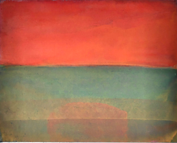
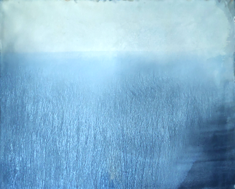
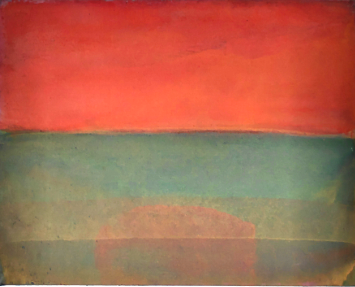
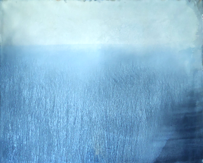
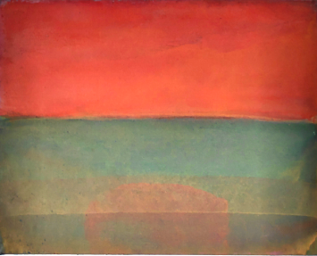
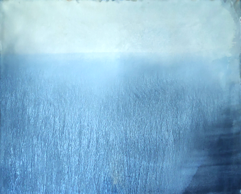
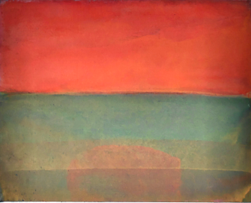
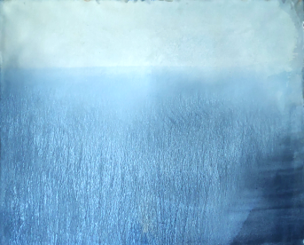

Jan Mazur. Architect. Artist. Lecturer. Thinker. Graduate of the Academy of Fine Arts, Warsaw and Faculty of Architecture, Warsaw University of Technology. Author of the Galician Slaughter monument in Tarnow. Co-author of the Mermaid of Warsaw monument at the Old Town Square and the Jedwabne Memorial monument.Multiple Medal Laureate at the International Biennale of Architecture in Kraków